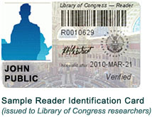

Notice: All Library of Congress research centers are closed to the public, and all on-site public programs are cancelled until further notice. Online resources and reference services, such as Ask a Librarian, will continue to be available during this time. For more information, see: www.loc.gov/coronavirus
Reader Registration
Users of the Library's research areas, including Computer Catalog Centers, and Copyright Office public service areas are each required to have a Reader Identification Card issued by the Library. Cards are free and can be obtained by completing a registration process and presenting a valid driver's license, state-issued identification card, or passport. Researchers must be 16 and above years of age at time of registration. Questions should be directed to 202-707-5278. 
A Reader Identification Card is valid for two years. While it is not possible to renew your Reader’s card online, you can present proof of a government-issued ID (for example, Driver’s License or Passport) to the representative onsite at either Library of Congress Reader Registration stations.
How and Where to Register in Person
New researchers should register in person at the Reader Registration Station located in the Madison Building, Room LM 133 (in the Newspaper & Current Periodicals & Newspaper Reading Room) or the Jefferson Building, Room LJ 139 (in the Microform and Electronic Resources Center). The Library cannot accept registrations via mail, email, or telephone. Upon completion of a simple computerized self-registration process, Library staff will verify your information, take an identification photo, have you provide a digitized signature, and give you your card.
- View Library of Congress campus map
- View Reader Registration Station location in the Madison Building (Room LM 133)
Hours: 8:30am to 4:30pm - Monday through Saturday - View Reader Registration Station location in the Jefferson Building (Room LJ 139)
Hours: 8:30am to 4:30pm - Tuesday, Friday, and Saturday; 8:30am to 9:00pm - Monday, Wednesday, and Thursday - Both Stations are closed Sundays and Federal Holidays
How to Pre-Register Online
It is possible to pre-register online by completing a simple Web form (this can be done up to two weeks prior to visiting the Library of Congress in person). You will still need to report to the Reader Registration Station and present your valid identification. Once your ID has been verified, Library staff will take an identification photo, have you provide a digitized signature, and give you your card.
PLEASE NOTE: The ID shown must contain the same information (e.g., home address) that was entered when you pre-registered online. If a change has occurred, Library staff will modify the information prior to issuing the Reader Identification Card.
Using Your Reader Identification Number to Request Materials from the Collections
Library of Congress registered readers may request materials from the Library’s general collections via the LC Online Catalog (catalog.loc.gov) using their individual "account numbers." Materials will be retrieved for use only in the Library's Main, Local History and Genealogy, Science and Business and Area Studies reading rooms. In order to use the service, readers must have a Reader Identification Card issued after April 15, 2009.
Special Instructions for Registering Large Groups
Those planning to bring large groups of new researchers to the Library for registration should contact the supervisor of the Reader Registration Station in advance at 202-707-5278 to ensure expeditious processing of the group.
Access to Library of Congress Reading Rooms
A valid Reader Identification Card is the minimum requirement for access to the Library's public reading rooms. Some reading rooms have supplemental registration procedures and/or conditions of use (some reading rooms require researchers to be 18+ years of age).
For more information about the requirements in a particular reading room, one should contact that reading room.
Requesting Materials/Patron Account Help
Library of Congress registered readers may use the LC Online Catalog to request materials from the Library's general collections, the Law Library, and the Music Division. The Catalog's automated call slip service (ACS) offers delivery of materials only to the Library's Main, Science and Business, European, Hispanic, Law, and Performing Arts reading rooms. To use this service, you will need to set up your Library of Congress Patron Account.